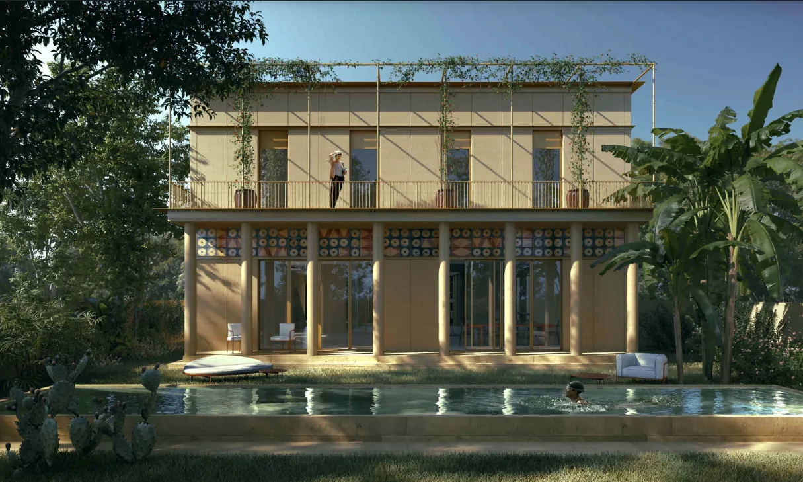
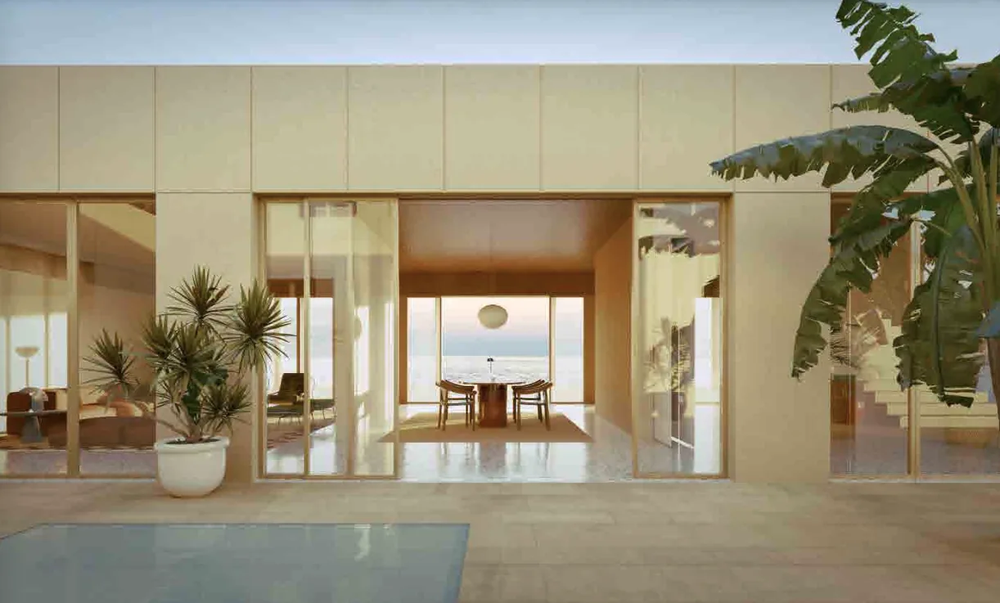
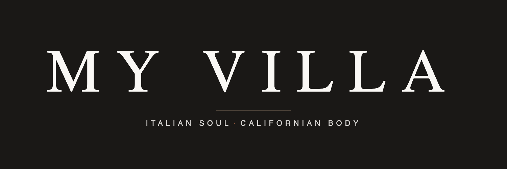

Conversazioni da presidiare
Post e thread dove conviene entrare con un commento, con risposta suggerita.
Piano editoriale — proposte
Tutte le proposte per Instagram in un'unica lista, più recente in alto. L'etichetta dice l'origine: Journal = ricavata da un articolo del sito (si rinnova ogni giorno), Reattivo = scritta dalla redazione su una notizia, Editoriale = contenuto istituzionale indipendente dal blog. Per pubblicare: scarica l'immagine e posta dall'app con il testo della card. I link hanno UTM per misurare il traffico in Analytics.

Archetype — The Living Green Roof

Vision — Permanence vs Renewal

System — Exposed Concrete, No Cladding

Vision — Resilience as Continuity

Archetype — The Pergola

Vision — Why LA Needs Villas

System — On-Site Concrete Production

Vision — Italian Soul, Californian Body

Archetype — The Portico


Insurable Home in California: The Configuration Trap Behind Wildfire Risk


Passive Cooling in Los Angeles: What an Earthen Pavilion Teaches Custom Homes


partner transsolar_klimaengineering

partner buromilan



two millennia of villa typology adaptability per
the brentwood home audrey hepburn rented
ozzy and sharon osbourne s los angeles h
laist a foul problem fire survivors w
Già pubblicati
Archivio anti-duplicati: prima di postare, controlla qui.
| Data | Post | Tipo | Fonte |
|---|---|---|---|
| 2026-06-13 | jeremywilsdh6v author jeremywilsdh6v | reactive | link |
| 2026-06-11 | california insurance commissioner race p | reactive | link |
| 2026-06-11 | ibhs expands wildfire prepared program t | reactive | link |
| 2026-06-11 | ibhs rounds out wildfire prepared progra | reactive | link |
| 2026-06-10 | 2026 06 10 ig test palisades standing | journal_companion | link |
| aaa travelers rate hikes california insurable luxury homes.ig | journal_companion | link | |
| wildfire rebuild tracker california permits 2026.ig | journal_companion | link |
X
seleziona le proposte: elimina ciò che non serve, "fatto" ciò che hai pubblicatoConversazioni da presidiare
Post e thread dove conviene entrare con un commento, con risposta suggerita.
Piano editoriale — proposte
Tutte le proposte per X in un'unica lista, più recente in alto. L'etichetta dice l'origine: Journal = ricavata da un articolo del sito (si rinnova ogni giorno), Reattivo = scritta dalla redazione su una notizia, Editoriale = contenuto istituzionale indipendente dal blog. “Pubblica su X” apre il compositore col post già scritto. I post Reattivi mostrano lo score ▲ (trazione della conversazione al rilevamento) e stanno in alto; il link @autore e “Apri il post su X” portano alla conversazione originale per approfondire. Metriche live con lo step 2. I link hanno UTM per misurare il traffico in Analytics.
consumerwd author consumerwd text
realestateorbit author realestateorb
michaelwwara author michaelwwara t
realmatt re author realmatt re tex
bevocalnow author bevocalnow text
juliechangre author juliechangre t
realmatt re author realmatt re t
mcn742766360744 author mcn7427663607
Custom Home Design in Los Angeles: The Narrow-Lot Advantage
Luxury Home in Malibu: The Value of a Stripped Concrete Shell
Custom Home Design in California: Sound as a Site Asset
Luxury Home Addition in Bel Air: The $47M Preservation Case
Reinforced Concrete Custom Homes in LA: As-Cast Finish
Fire-Resistant Home Design in California: The Water Reserve
Luxury Guesthouse Design in Los Angeles: The Second Volume
Reinforced Concrete Homes in California: The Dorian Lesson
Luxury Home Design in Malibu: The $13M Single-Level Case
Mediterranean Villa California: What a $26.8M Estate Reveals
Hillside Custom Home in Los Angeles: Structure as Retaining Wall
Bel Air Luxury Estate: The Material Lesson of a Decade-Long Build
Concrete Villa Design: The Color Lesson From a Pink House
Organic Modernism in LA: The Craft Lesson of a 1958 Villa
Beverly Hills Luxury Record: The $200M Aman Penthouse
Insurable Home in California: The Configuration Trap Behind Wildfire Risk
Reinforced Concrete Grid Homes: A Lesson for California
Passive Cooling in Los Angeles: What an Earthen Pavilion Teaches Custom Homes
Concrete Home in Los Angeles: Inside a $47M Beverly Hills Sale
Mediterranean Villa in Beverly Hills: What Endures Beyond Style
ozzy and sharon osbourne s los angeles h
laist a foul problem fire survivors w
the brentwood home audrey hepburn rented
ozzy and sharon osbourne s los angeles h
laist a foul problem fire survivors w
Già pubblicati
Archivio anti-duplicati: prima di postare, controlla qui.
| Data | Post | Tipo | Fonte |
|---|---|---|---|
| 2026-06-15 | how should high value california homeown | reactive | |
| 2026-06-14 | wildfire risk and insurance reshaping ca | reactive | |
| 2026-06-13 | jeremywilsdh6v author jeremywilsdh6v | reactive | |
| california insurance commissioner 2026 single payer proposal.x | journal_companion | link | |
| fair plan only home insurance california underinsured luxury.x | journal_companion | link |
Conversazioni da presidiare
Post e thread dove conviene entrare con un commento, con risposta suggerita.
Piano editoriale — proposte
Tutte le proposte per LinkedIn in un'unica lista, più recente in alto. L'etichetta dice l'origine: Journal = ricavata da un articolo del sito (si rinnova ogni giorno), Reattivo = scritta dalla redazione su una notizia, Editoriale = contenuto istituzionale indipendente dal blog. “Pubblica su LinkedIn” copia il testo e apre il compositore col link dell'articolo già allegato come anteprima: incolla il testo sopra. Caption entro i 400 caratteri, tono esplicativo. I link hanno UTM per misurare il traffico in Analytics.
Custom Home Design in Los Angeles: The Narrow-Lot Advantage
Luxury Home in Malibu: The Value of a Stripped Concrete Shell
Custom Home Design in California: Sound as a Site Asset
Luxury Home Addition in Bel Air: The $47M Preservation Case
Reinforced Concrete Custom Homes in LA: As-Cast Finish
Fire-Resistant Home Design in California: The Water Reserve
Luxury Guesthouse Design in Los Angeles: The Second Volume
Reinforced Concrete Homes in California: The Dorian Lesson
Luxury Home Design in Malibu: The $13M Single-Level Case
Mediterranean Villa California: What a $26.8M Estate Reveals
Hillside Custom Home in Los Angeles: Structure as Retaining Wall
Bel Air Luxury Estate: The Material Lesson of a Decade-Long Build
Concrete Villa Design: The Color Lesson From a Pink House
Organic Modernism in LA: The Craft Lesson of a 1958 Villa
Beverly Hills Luxury Record: The $200M Aman Penthouse
Insurable Home in California: The Configuration Trap Behind Wildfire Risk
Reinforced Concrete Grid Homes: A Lesson for California
Passive Cooling in Los Angeles: What an Earthen Pavilion Teaches Custom Homes
Concrete Home in Los Angeles: Inside a $47M Beverly Hills Sale
Mediterranean Villa in Beverly Hills: What Endures Beyond Style
Già pubblicati
Archivio anti-duplicati: prima di postare, controlla qui.
Journal
gli articoli del sito, in ordine di pubblicazioneGli ultimi 20 articoli pubblicati su myvilla.la — le proposte social ricavate da ciascuno sono nelle tab Instagram / X / LinkedIn. "Elimina dalla lista" nasconde l'articolo solo da questa vista; "Richiedi modifica o rimozione" prepara una mail alla redazione, che interviene sull'articolo vero e proprio.
Custom Home Design in Los Angeles: The Narrow-Lot Advantage
Lehrer Architects' Loma Verde is a reminder that slenderness is a structural argument long before it is a stylistic one.
Luxury Home in Malibu: The Value of a Stripped Concrete Shell
A gut renovation removed almost everything except the structure — and the structure is what kept the house in play.
Custom Home Design in California: Sound as a Site Asset
A Pacific Palisades midcentury house makes the case that the most valuable thing about a lot may be what you hear on it.
Luxury Home Addition in Bel Air: The $47M Preservation Case
A developer chose 12,000 new square feet over the wrecking ball — and inherited the hardest problem in residential architecture: the joint.
Reinforced Concrete Custom Homes in LA: As-Cast Finish
A riverfront headquarters in Paraná makes the case that the formwork, not the cladding, is where a building's finish is actually decided.
Fire-Resistant Home Design in California: The Water Reserve
A Mendocino house by Jensen Architects makes the case that the most consequential resilience decisions happen outside the walls — in clearance, storage, and stored capacity.
Luxury Guesthouse Design in Los Angeles: The Second Volume
Jeff Goldblum's Barbara Bestor pavilion is a reminder that the smallest building on a Los Angeles lot is usually the hardest one to design.
Reinforced Concrete Homes in California: The Dorian Lesson
A Bahamas house that outlasted a Category 5 storm is now selling on its performance record — and that changes how resilient construction gets priced.
Luxury Home Design in Malibu: The $13M Single-Level Case
A producer's ocean-view listing shows how much of a Malibu house's value sits in its horizon line — and how much sits in its envelope.
Mediterranean Villa California: What a $26.8M Estate Reveals
A Tuscan-inspired compound in Bradbury Estates asks the oldest question in the typology — is the villa a palette, or a plan?
Hillside Custom Home in Los Angeles: Structure as Retaining Wall
A Japanese house by TSC architects deletes the retaining wall — and quietly rewrites the economics of building on a slope.
Bel Air Luxury Estate: The Material Lesson of a Decade-Long Build
What a 70,000-square-foot Peter Marino estate reveals about time, permanence, and how the most expensive homes are actually made.
Concrete Villa Design: The Color Lesson From a Pink House
A Le Corbusier-inspired villa in Singapore's jungle shows how pigment and mass can work as one architectural gesture.
Organic Modernism in LA: The Craft Lesson of a 1958 Villa
A rare intact W. Earl Wear house reminds Los Angeles that craftsmanship is a material decision, not a finish.
Beverly Hills Luxury Record: The $200M Aman Penthouse
A single condo is poised to reset California's price ceiling — and to reveal what ultra-buyers now pay for.
Insurable Home in California: The Configuration Trap Behind Wildfire Risk
Zurich's CEO says the problem starts long before the loss — and insurance alone cannot fix it.
Reinforced Concrete Grid Homes: A Lesson for California
A São Paulo villa built on a disciplined structural grid shows why the frame — not the finish — sets the terms for everything that follows.
Passive Cooling in Los Angeles: What an Earthen Pavilion Teaches Custom Homes
Liz Gálvez's shade pavilion reframes cooling as a question of mass and material — not machinery.
Concrete Home in Los Angeles: Inside a $47M Beverly Hills Sale
A 96-column poured-concrete house trades near ask — and the structure itself is the story.
Mediterranean Villa in Beverly Hills: What Endures Beyond Style
A $65,000-a-month rental reveals how much of villa value lives in the material, not the label.
Brand kit
Loghi ufficiali (SVG vettoriale + PNG) e la caption bank di riferimento.

myvilla-wordmark.svg
myvilla-wordmark.pngCaption bank Instagram (maggio 2026)
# MY VILLA — Caption Instagram (selezione pronta)
Sette caption già in tono brand, pronte da pubblicare. Suddivise per tipologia.
Tutte le immagini di accompagnamento (`image.webp` / `image.jpg`) sono già
disponibili in `_system/social/posts/editorial/_publish_ready/<slug>/`
per le **Editoriali brand**; per le **Reattive** l'immagine va selezionata
in base al pezzo Journal collegato.
Tono: editoriale, prima persona plurale ("we"). Niente pitch diretto. Una
sola osservazione per post. Hashtag asciutti (5–6 max).
---
## 1 · Editoriali brand (evergreen) — pronte per lancio
### A · *Villa typology · 2.000 anni di adattabilità*
> Two thousand years of villa typology, one persistent truth: permanence and adaptability are not opposites. The Italian villa survived every era by being both monumental and intimate — a lesson Los Angeles is ready to receive.
>
> #MyVilla #MyVillaLA #ReinforcedConcrete #VillaTypology #ArchitecturalPermanence #LosAngelesArchitecture
### B · *L'archetipo del cortile*
> The courtyard is the oldest room in architecture — no roof, no walls that face the world. Just sky, stone, and the life that happens inside. Italian masters knew it. Los Angeles needs it.
>
> #MyVilla #MyVillaLA #ReinforcedConcrete #CourtyardHouse #ArchitecturalHeritage #LosAngelesArchitecture
### C · *Partner spotlight — BUROMILAN*
> Structure is the argument. via @buromilan — the Milano · Venezia · New York engineers behind 90+ Renzo Piano projects bring that same precision to every My Villa frame.
>
> #MyVilla #MyVillaLA #ReinforcedConcrete #StructuralEngineering #Permanence #ItalianSoul
### D · *Partner spotlight — Transsolar Klima Engineering*
> Comfort under California sun — engineered, not assumed.
> via @transsolar_klimaengineering
>
> *"Radiant cooling, geothermal, thermal storage — zone-level to plant-level."*
> Our climate engineering partner — designing thermal-mass behaviour into every My Villa.
>
> #MyVilla #MyVillaLA #ReinforcedConcrete #ClimateEngineering #ThermalMass #PassiveDesign
---
## 2 · Reattive (commento su news LA luxury) — esempi del nostro stile
### E · *$17M, casa in legno: Hancock Park*
> $17M for a 100-year-old wood-frame home. Let that sit for a moment.
>
> The Osbournes' Hancock Park mansion just hit the market — a gorgeous estate, no question. But at ultra-luxury price points in Los Angeles, buyers are increasingly asking a harder question: what is this structure actually made of?
>
> Wood-frame construction was the standard a century ago. Today, reinforced concrete offers something legacy construction simply can't — fire resilience, seismic performance, and a lifespan measured in generations, not renovation cycles.
>
> At $17M, you're not just buying a home. You're making a bet on how it ages.
>
> #LuxuryRealEstate #LosAngeles #ReinforcedConcrete
### F · *Brentwood, $9.4M, eredità Hepburn*
> $9.4M for Hollywood history in Brentwood. But what's the structure actually worth?
>
> The home Audrey Hepburn once rented from Deborah Kerr just sold — a beautiful Georgian-style property unchanged for over 30 years. It's a storied address in one of LA's most desirable neighborhoods.
>
> But here's the tension in today's LA luxury market: buyers are paying eight figures for charm and location while inheriting aging wood-frame construction in a city defined by seismic and fire risk.
>
> Reinforced concrete doesn't erase character — it ensures the next chapter of a home is as enduring as its past. That's the standard we're building toward at My Villa.
>
> Link in bio.
>
> #ArchitecturalDesign #LosAngelesLuxury #ReinforcedConcrete
### G · *Altadena · ricostruire significa rifare tutto*
> Rebuilding after fire? The house might be the easy part.
>
> Altadena homeowners are discovering that outdated cesspools and septic tanks beneath their properties must be brought up to current code before rebuilding can even begin — adding tens of thousands in unexpected costs to an already brutal process.
>
> This is exactly why we think about homes as complete systems, not just what's above grade. When My Villa designs a reinforced concrete home, we're engineering from the ground up — site infrastructure, drainage, utilities, structure — so nothing gets left to chance.
>
> Rebuilding smarter means rebuilding holistically.
>
> #LosAngelesRealEstate #Altadena #ReinforcedConcrete
---
## Note di pubblicazione
- **Lunghezza**: 80–180 parole. Sotto i 125 caratteri per la prima riga (preview Feed) — la prima riga deve "incassare il click".
- **Hashtag**: 5–6 max. Mai più di 8. Sempre `#MyVilla` + `#MyVillaLA` + `#ReinforcedConcrete` come triade fissa.
- **Tag**: @buromilan, @transsolar_klimaengineering, @itsarchitecture quando si nomina il partner.
- **Niente em-dash all'inizio frase**. Niente "—" doppio.
- **Niente claim non sourced**: ogni cifra/data deve essere verificabile.
- **Mai pitch diretto** ("call us", "request a quote"). Solo osservazione + posizionamento.
---
*Archivio completo (45+ caption indicizzate per topic) disponibile in
`_system/social/posts/` — sezioni `approved/`, `reactive/`, `editorial/_publish_ready/`.*


{kind=link}
{kind=link}
{kind=link}
{kind=link}
{kind=link}
{kind=link}